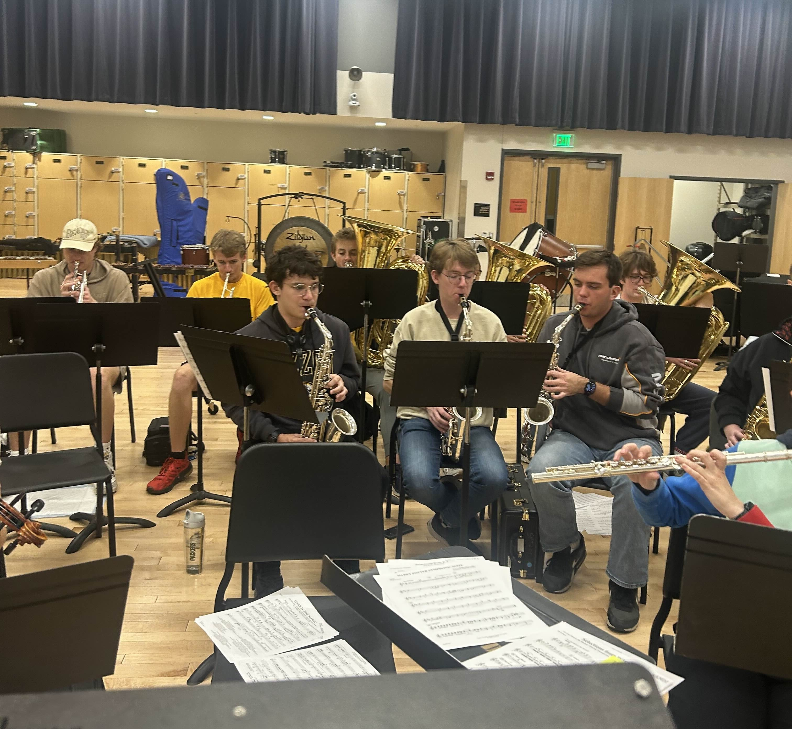
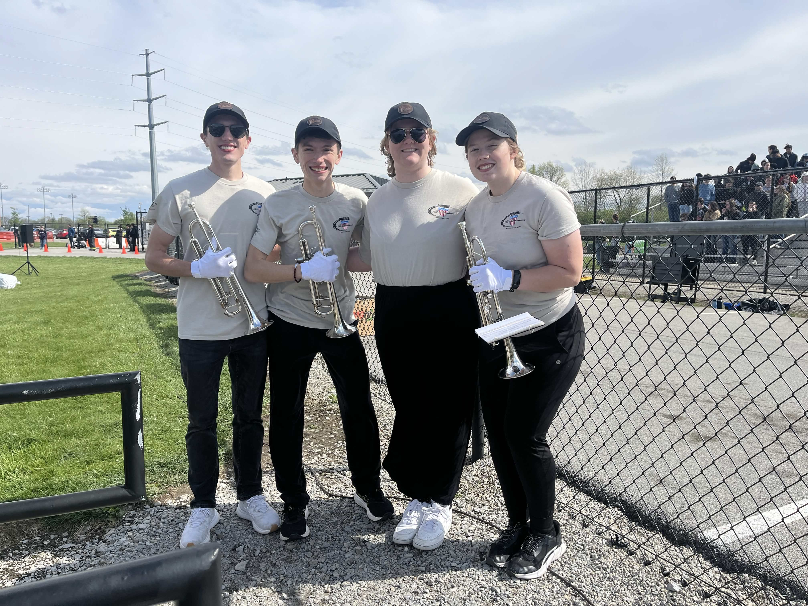
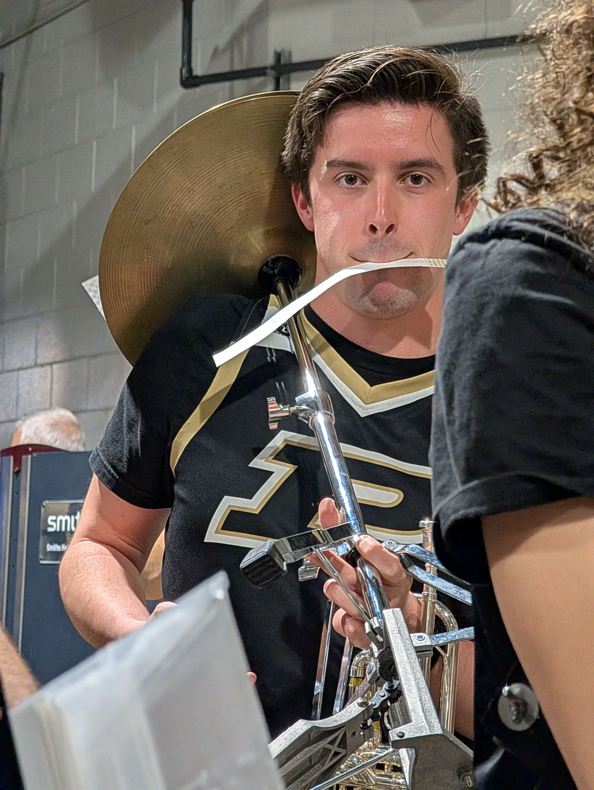
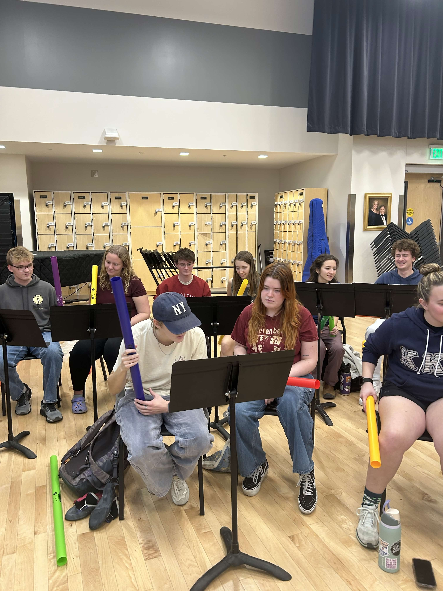
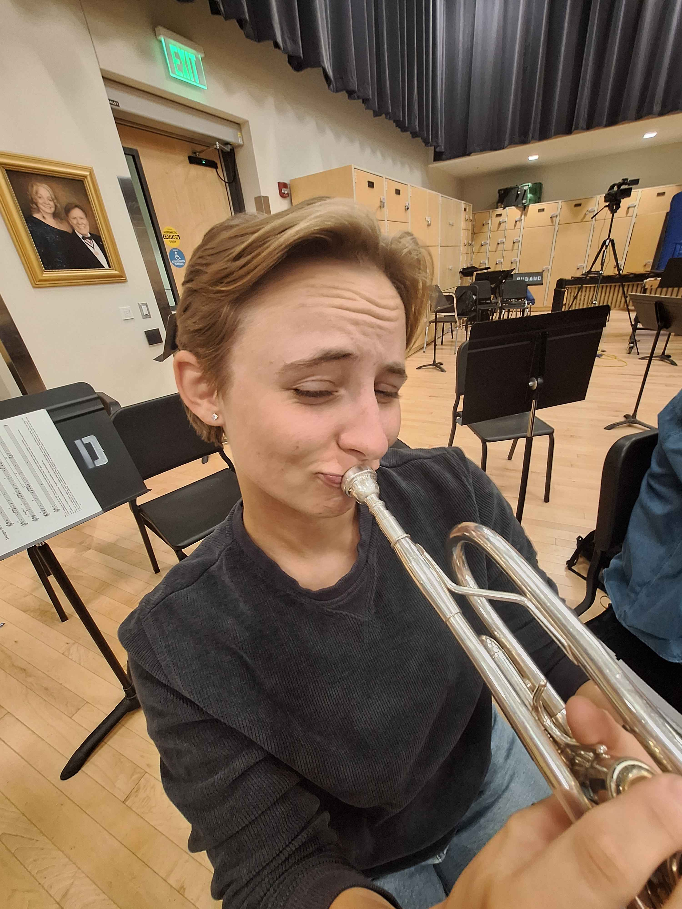

Fight Songs
These are the fight songs as played by the Gamma Pi Chapter of Kappa Kappa Psi in fall 2025.
Hail Purdue
Lyrics
[Verse 1]
To your call once more we rally
Alma mater, hear our praise
Where the Wabash spreads its valley
Filled with joy, our voices raise
From the skies in swelling echoes
Come the cheers that tell the tale
Of your vict'ries and your heroes
Hail, Purdue, we sing all hail
[Chorus]
Hail, hail to old Purdue
All hail to our old gold and black
Hail, hail to old Purdue
Our friendship, may she never lack
Ever grateful, ever true
Thus, we raise our song anew
Of the days we've spent with you
All hail our own Purdue
[Verse 2]
When in after years we're turning
Alma mater, back to you
May our hearts, with love, be yearning
For the scenes of old Purdue
Back among your pathways winding
Let us seek what lies before
Fondest hopes and aims e'er finding
While we sing of days of yore
[Chorus]
Hail, hail to old Purdue
All hail to our old gold and black
Hail, hail to old Purdue
Our friendship, may she never lack
Ever grateful, ever true
Thus, we raise our song anew
Of the days we've spent with you
All hail our own Purdue
Purdue Hymn
Lyrics
[Verse]
Close by the Wabash
In famed Hoosier land
Stands old Purdue
Serene and grand
Cherished in mem'ry
By all her sons and daughters, true
Fair alma mater
All hail, Purdue
[Chorus]
Fairest in all the land
Our own Purdue
Fairest in all the land
Our own Purdue
For the Honor of Old Purdue
Lyrics
[Verse 1]
Come along, let us join in a song
Hail to old Purdue
On the Wabash she stands
With her welcoming hands
As an alma mater, true
Far and wide, she's our own Hoosier pride
Ever we loyal will be
So we'll sing it out
And we'll raise a shout
For our university
[Chorus]
Then hail, all hail to old Purdue
The pride of all the West
We'll sing out the story
And we'll tell of the glory
Of the school, we love the best
Then hail, all hail to old Purdue
Our alma mater, true
And we'll evеr stand
Ev'ry heart and hand
For the honor of old Purdue
[Verse 2]
Oncе again, in a mighty refrain
Hail to old Purdue
From the ends of the Earth
Men have heard of her worth
And have found her to be true
She's so grand, she's the best in the land
Ne'er can her full worth be told
Though both loud and long
Her alumni, strong
May sing of the black and gold
[Chorus]
Then hail, all hail to old Purdue
The pride of all the West
We'll sing out the story
And we'll tell of the glory
Of the school, we love the best
Then hail, all hail to old Purdue
Our alma mater, true
And we'll ever stand
Ev'ry heart and hand
For the honor of old Purdue
Fighting Varsity
Lyrics
[Verse]
Here's the fighting varsity
That wears the black and gold
They fear no foe
And they hit them low
Let's give them all three mighty cheers
Rah, rah, rah
Here's the fighting team, boys
That fights for old Purdue
With loyal hearts
We will play our parts
As we yell for old Purdue
[Chorus]
Purdue, Purdue, rah, rah
Purdue, Purdue, rah, rah
Hoorah, hoorah
Bully for old Purdue




